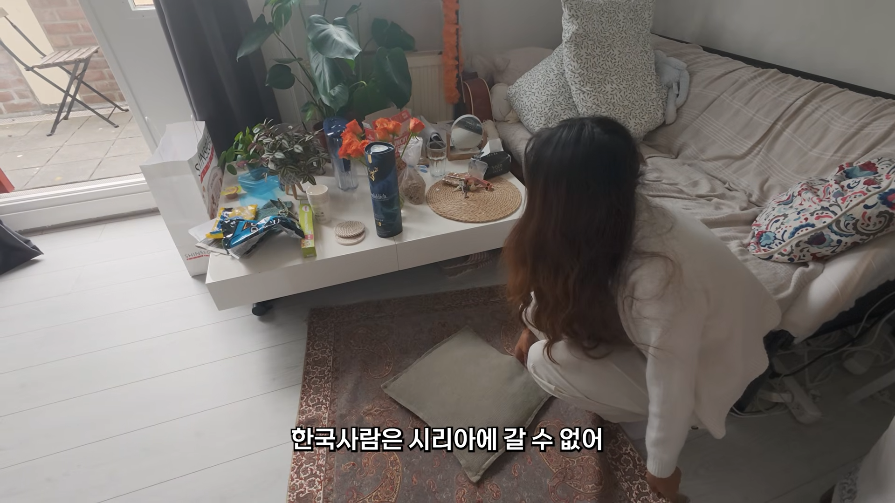
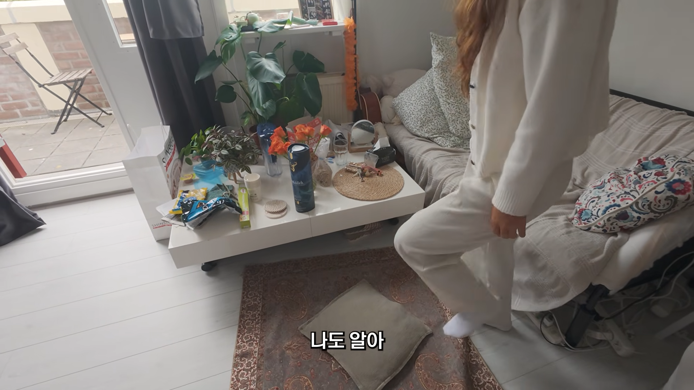
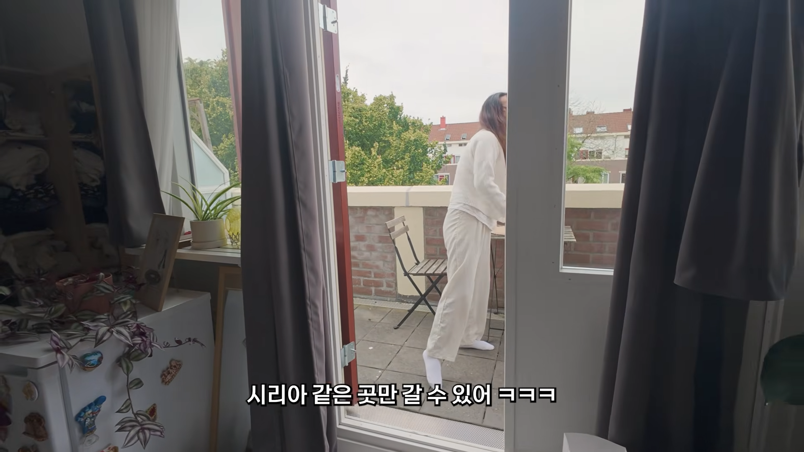

ㅋㅋㅋㅋㅋㅋ



ㅋㅋㅋㅋㅋㅋ
ㅋㅋㅋㅋㅋㅋㅋㅋㅋㅋ
시리아 북한
악의축
시리야

부럽다 북한구경도 할수있고
저긴 한국에서 못가게 막아놓은거지 시리아에서 못오게 막아놓은게 아닌데 ㅋㅋㅋ
중국인은 갈수있지만 한국인은 원칙적으로 못가는곳
이란, 이라크, 아프가니스탄, 소말리아, 예멘, 리비아, 우크라이나, 수단, 아이티, 말리, 북한
그 반대는 대만정도
? 중공 애들 대만 잘만 감
일반인관광 2019년부터막혔다는데? 갈수있어도 제한적이라고함
해외·홍콩·마카오에 유학 중이거나, 영주권/거주권이 있거나, 해외에서 일정 기간 취업·거주 중인 사람
대만에서 명시하고있는것
대만 취준생들의 가장 큰 라이벌이 바다 건너 같은 말을 쓰면서 월급은 적게 받아가도 만족하는 대륙인들이라는 말을 나는 좋아한다
당장 대만 코앞에 붙어있는 푸저우나 샤먼 생각하면 흠...ㅋㅋ
정확히는 시리아와 국교관계가 없어서 레바논 요르단 등을 경유해서 갈 순 있어도 문제가 생겼을 때 도움을 못받는 것에 가까웠다가, 시리아 내전 이후로 여행금지국가가 됐다가, 25년도부터 내전 종식되고 마침내 수교를 진행했는데 아직까지 갈 수는 없을듯
저짝 동네는 진짜 갔다간 좆될거같은데 ㅋㅋㅋㅋㅋ
예전에 기자들이 방문했었을 땐 이방인을 환대하는 평화롭고 매력적인 도시 그 자체였다는데, 한순간에 지옥도가 되어버려서...ㅠㅜ
ㄹㅇ파병때문에 레바논 갔었는데 지중해성 기후가 진짜 씹치트키임
IS가 깽판치려고 꿈틀대던 즈음에 다녀왔는데, IS 깽판 전까지만 해도 존나 좋았음...
동명갔다왔구나 수고가 많았다! 얼추 14진즈음인가보네...ㄷㄷ 동기가 29진~30진 갔다왔었는데 마냥 나쁘지만은 않았다고 들었슴...
가라고해도 가고싶지않은곳들이잔앜ㅋㅋㅋ
2026년 기준 중국 여권의 세계 순위는 59위 정도고, 무비자 40개국에 도착비자 50개국 정도로 의외로 중간보다는 좀 더 높은 수준이긴 함. 다만 선진국들은 다 막혀있고, 대만이 무비자 80개국 도착비자 50개국 정도인데 중국이랑 대만이랑 색이 반전되어있음 ㅋㅋ 대만이 무비자로 갈 수 있는곳은 중국에선 다 막혀있고, 대만이 무비자로 갈 수 없는곳은 중국에서 무비자로 갈 수 있음. 양안관계 대만 압승.
한국이랑 일본 싱가포르 UAE 정도가 187개국에서 빠졌다가 늘었다가 하고, 한국이 중국까지 무비자 가능해져서 유엔 상임이사국 모두 무비자로 갈 수 있는 국가는 한국뿐이긴 함.
아 이주제만 보면 또 어떤 호감고닉이 헐레벌떡 달려올지 벌써부터 기대 ㅋㅋㅋㅋㅋㅋㅋㅋㅋㅋ
유--쾌 ㅋㅋ